Brand Identity + Social Media Campaign
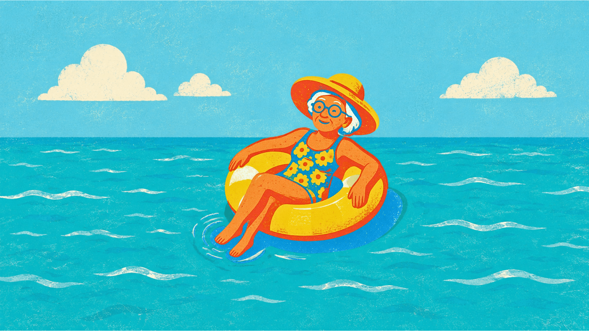
Lombardi needed to reach younger guests and unify three distinct property identities.
Reservations had declined as the group relied on an established, older clientele. The brief was to rebuild awareness with new guests while creating one cohesive brand across the three properties.
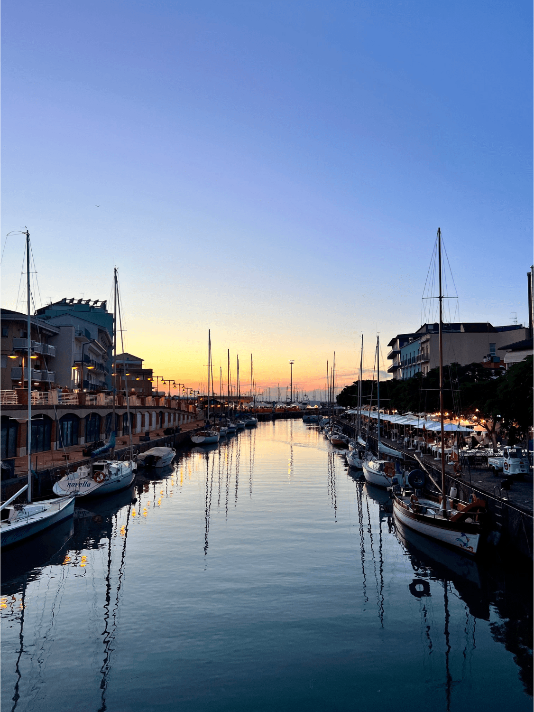
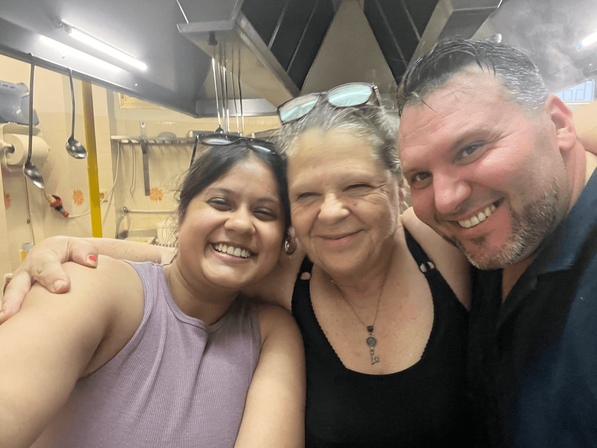
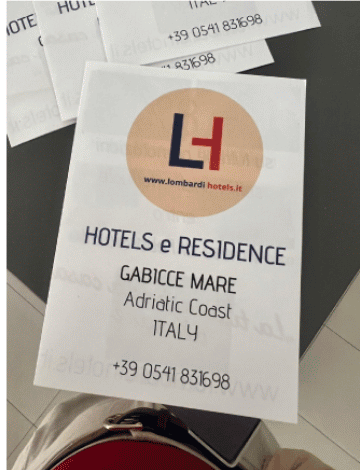
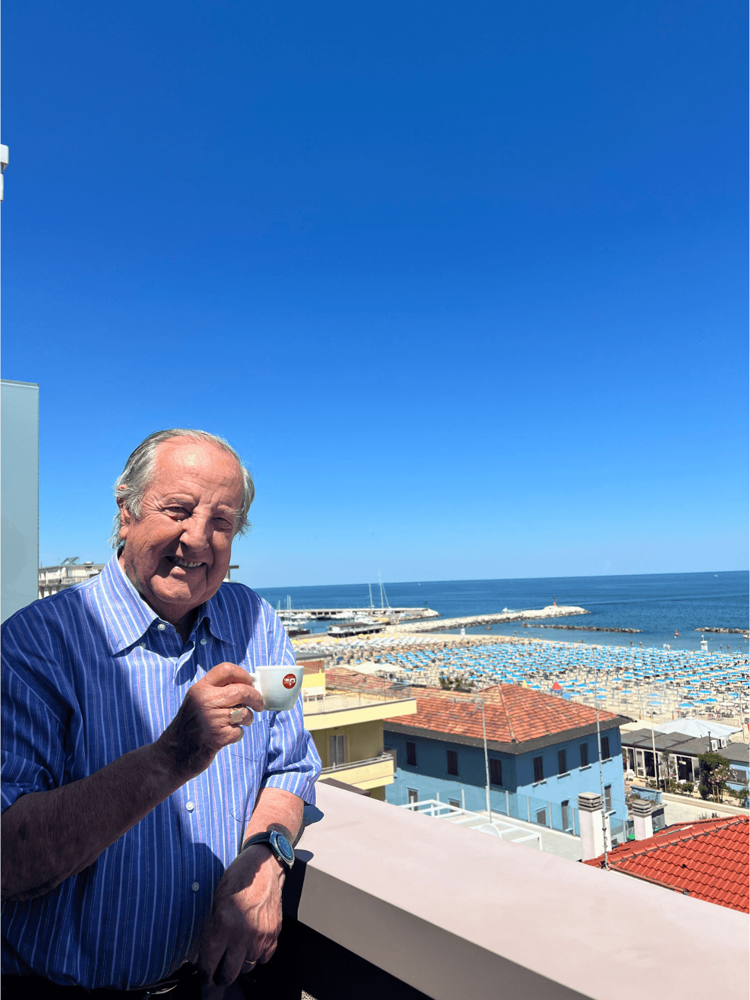
One mark, three properties.
One visual system brought Hotel Adriatico, Hotel Atlas and Residence Rosa together while keeping each property's colourway.
The mark draws from the Adriatic, summer and the character of the coast.
One identity across three properties, from vehicles and linen to social and guest-room details.
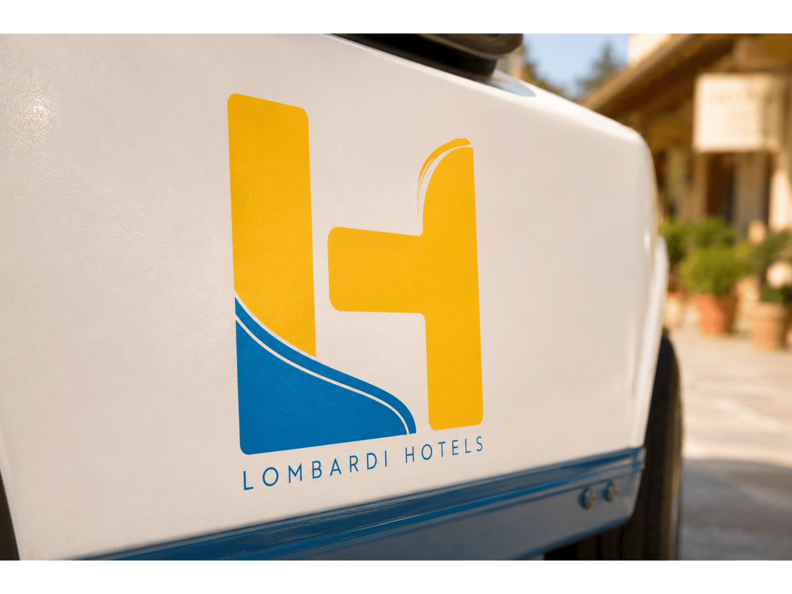
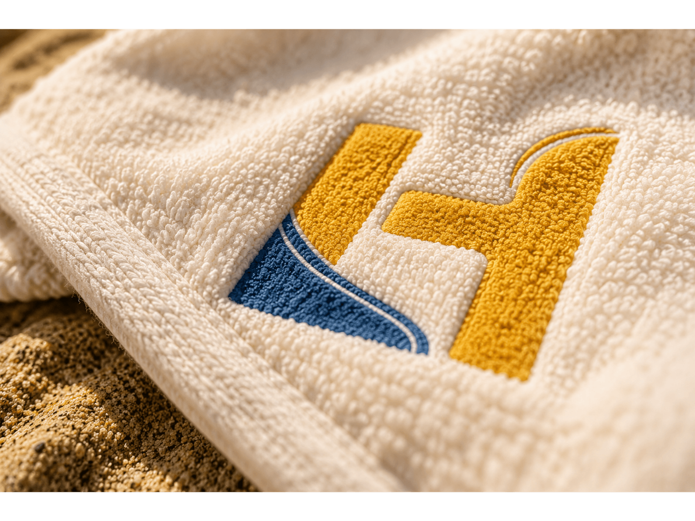
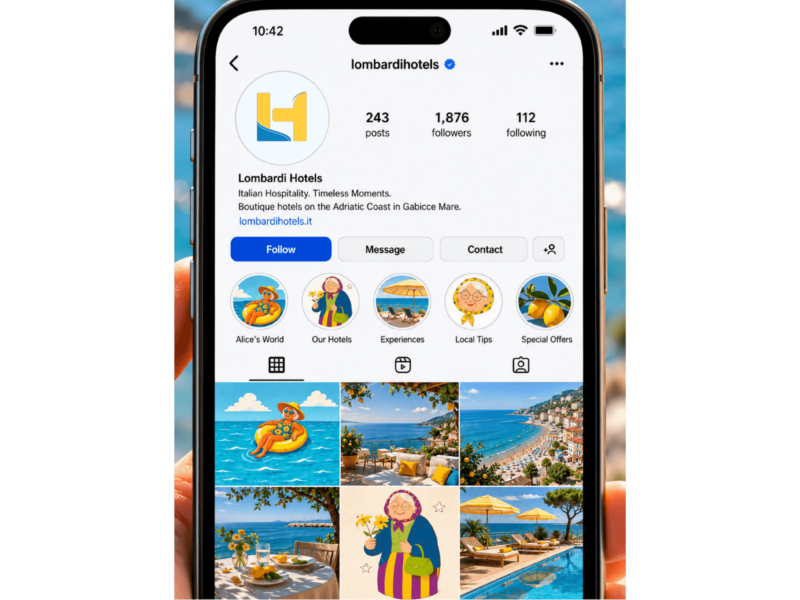
Core palette.
The three properties get three identities under one family.
One mark, three colourways.
A guest knows which property they're at without reading a sign, and Lombardi keeps one identity instead of three unrelated brands.
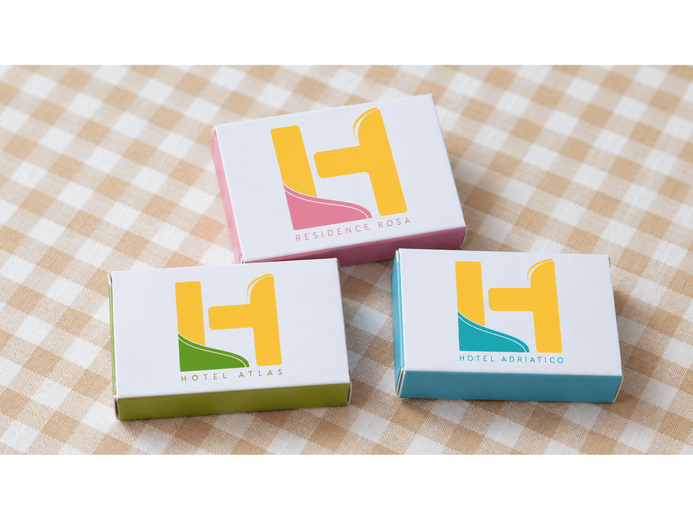
She wasn't invented for the campaign. She was already in the research.
Alice came from the audience research: an older traveller who values relaxation, authenticity and familiarity. At 102, she became the face of the campaign.
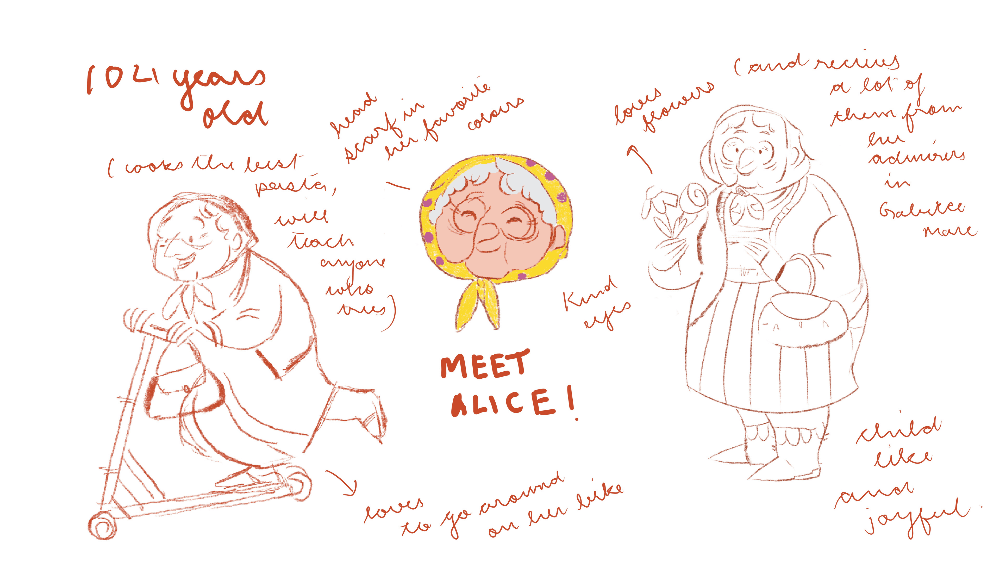
During my stay in Gabicce Mare, I met a guest who had been returning for decades. That conversation became the starting point for a campaign about the summers people return to, year after year.
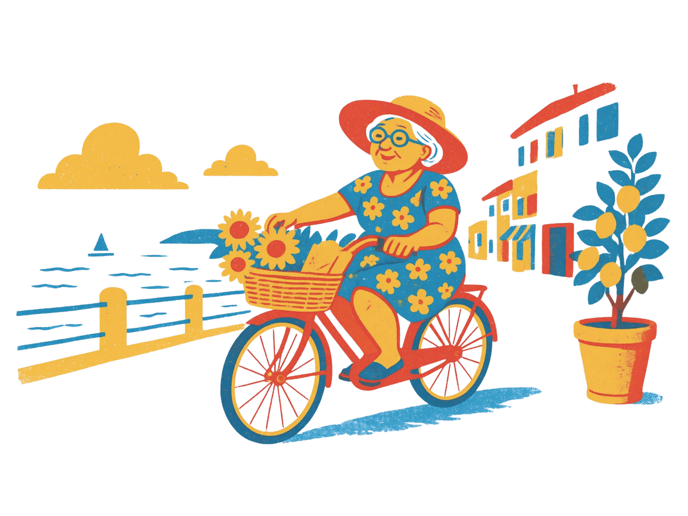
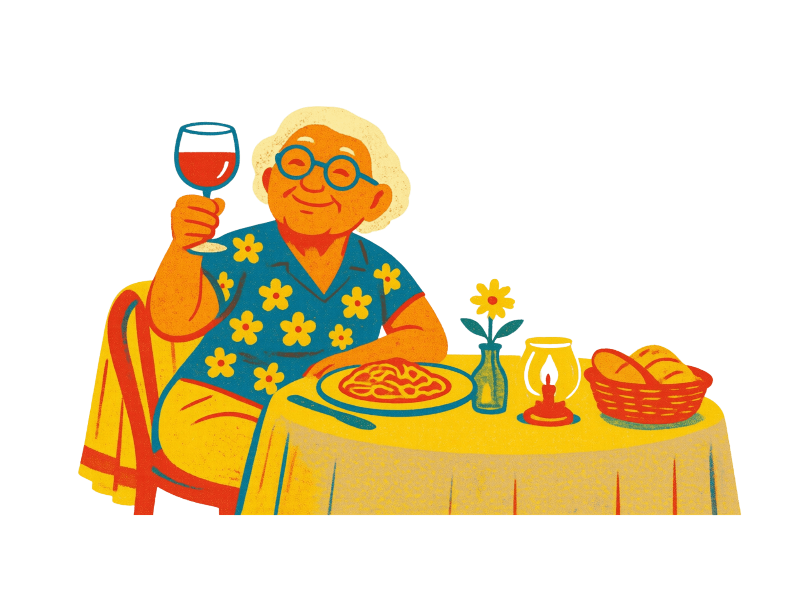
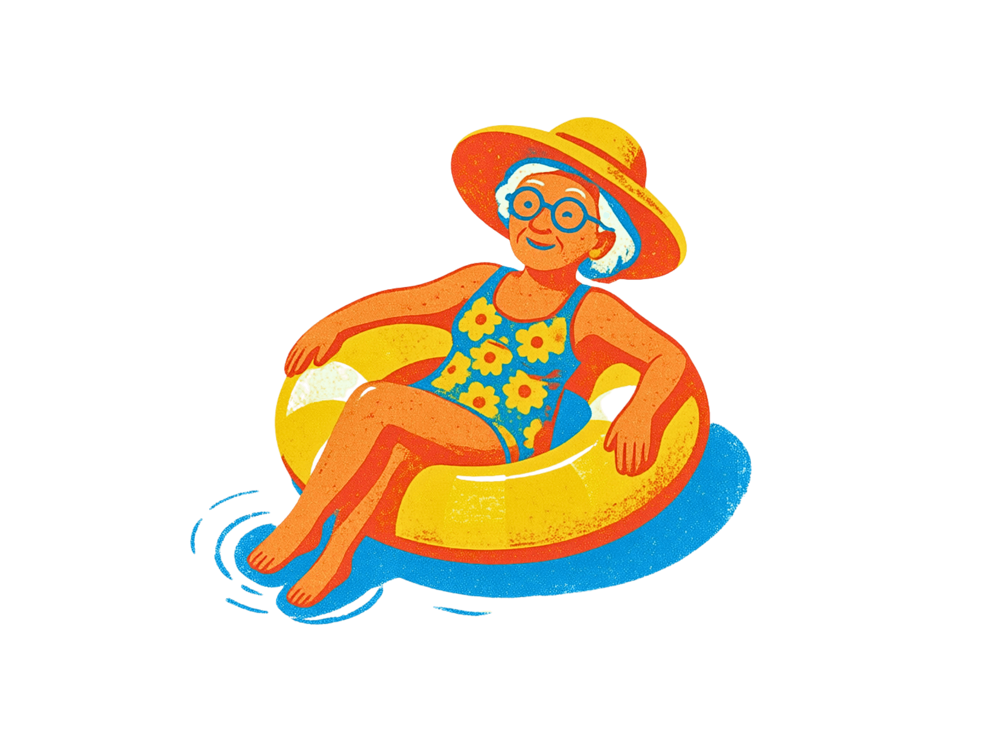
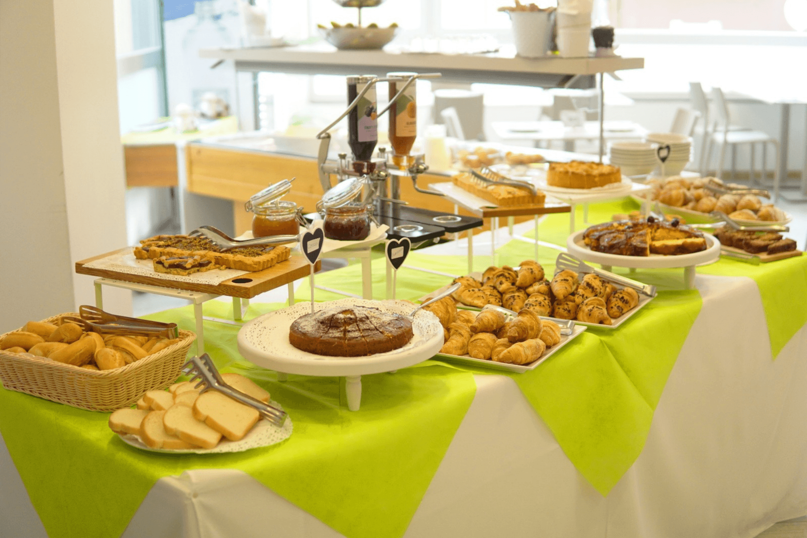
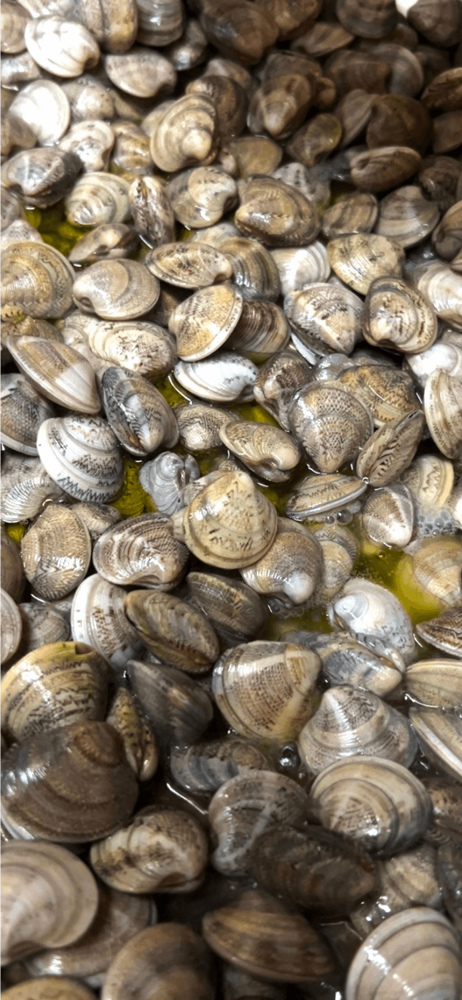
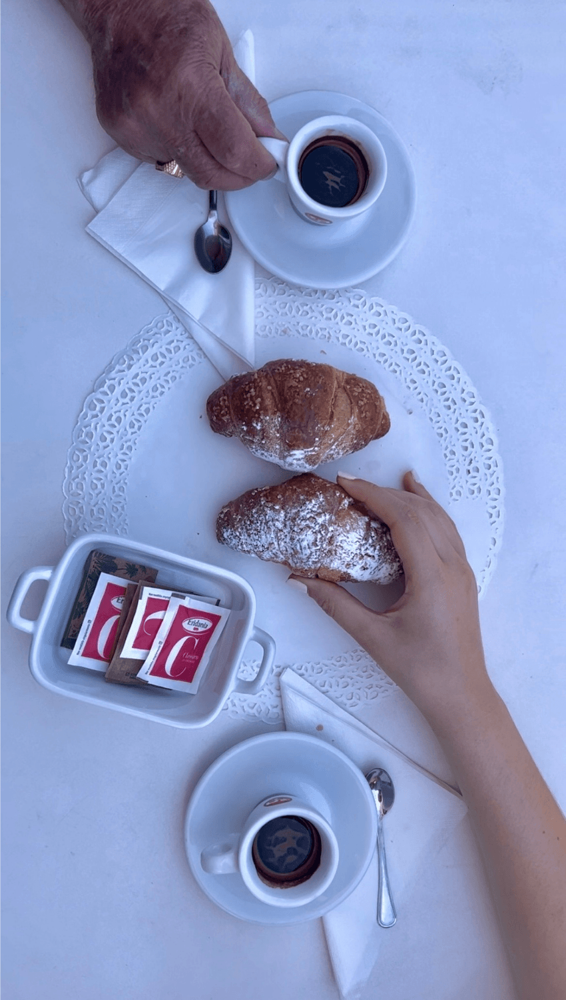
A season worth measuring.
The identity and campaign launched in the same season as these booking figures.
The project gave Lombardi a cohesive identity across its properties and a campaign rooted in the people and place of Gabicce Mare.